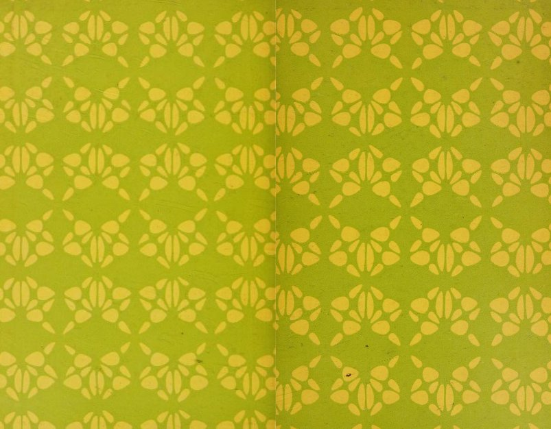

If you're into weird fiction/horror ala H.P. Lovecraft, the Welsh author Arthur Machen is essential reading. The collection in question, The House of Souls, includes four stories: A Fragment of Life, The White People, The Great God Pan (Stephen King has called this one the maybe the best [horror story] in the English language
), and The Inmost Light. Surprisingly creepy for the 1890s when they were first written. The collection was published in 1906 in the UK by Grant Richards, and 1922 in the US by Alfred Knopf. The cover of the UK edition by Sidney Sime is insane. The UK edition also included The Three Impostors, but I'll be focusing on the US edition here.
I came across a very affordable copy of it at (I want to say; I'm pretty sure) the legendary Brattle Bookshop in Boston, MA, and knew I had to have it. No dust jacket, but just check out that decadent yellow cover fabric! The link above is to a scan of that edition on the Internet Archive. The next thing I noticed was the endpapers, with their intriguing yellow and lime green design. I want to make sense of it, but I'm not sure I can. The closest I can hypothesize is it's some visual reference to cloven footprints, like Pan would have. That might be a stretch.

But then.
Then I see one of the most amazing custom bookplates I've ever come across, which also so happens to fit the aesthetic of the book almost too well. I was sold on the book already, but that took bookplate took it over the edge.
More of interest:
- Monster Brains: a collection of illustrations by Sidney Sime Clearly, surely, an inspiration on the psychedelic movement later in the century. I also see how he could have influenced Mervyn Peake's illustration work.